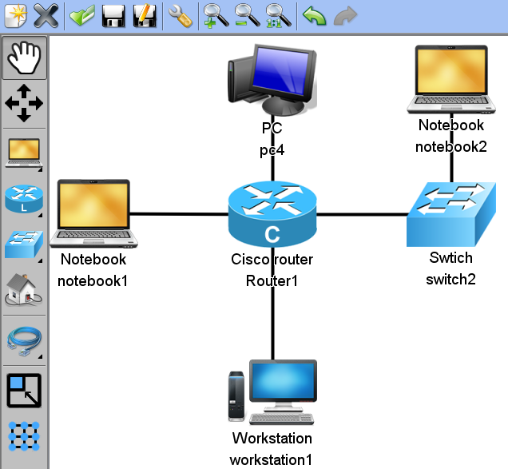
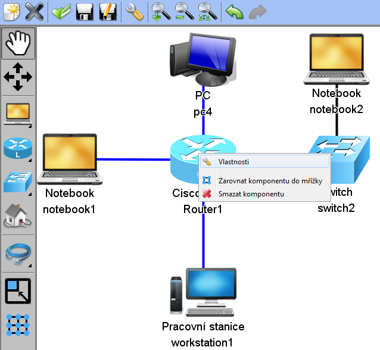
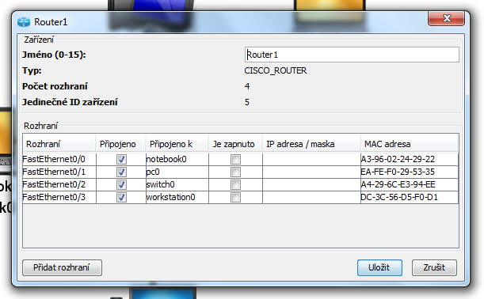
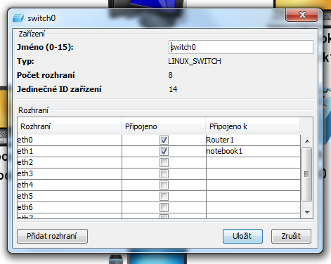
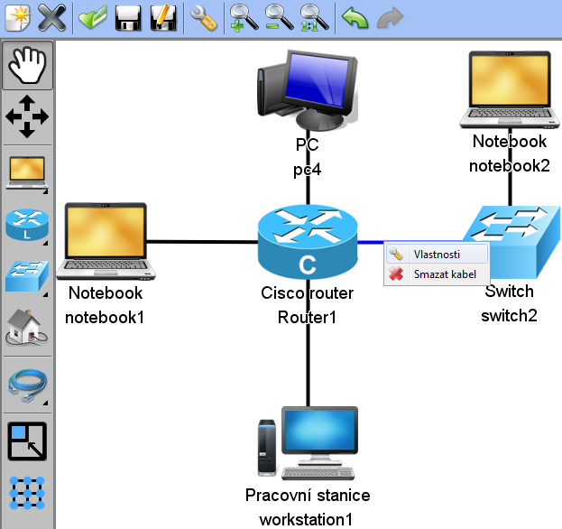
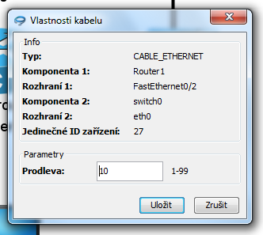

V této části tutorialu nastavíme parametry komponent a kabelů.
Nastavení vlastností si ukážeme na následující síti:
Do vlastností komponent se dostaneme následovně: Pravým tlačítkem klikneme na komponentě a v menu, které se objeví vybereme Vlastnosti.
Ve vlastnostech nastavujeme Jméno zařízení, MAC adresu, IP adresu a Je zapnuto.
MAC adresa je automaticky vygenerovaná. Následuje příklad s vlastnostmi komponenty.
Ve vlastnostech nastavujeme pouze Jméno zařízení. Zbytek dialogu obsahuje informace, které komponenty jsou ke switchi připojeny. Následuje ukázka dialogu:
Do vlastností kabelu se dostaneme pravým tlačítkem myši na kabelu, a v menu, které se objeví, vybereme Vlastnosti:
Ve vlastnostech nastavujeme prodlevu kabelu. Tato hodnota bude hrát roli při přehrávání paketů na síti.
Další částí tutorialu je: Nastavení zobrazených detailů.